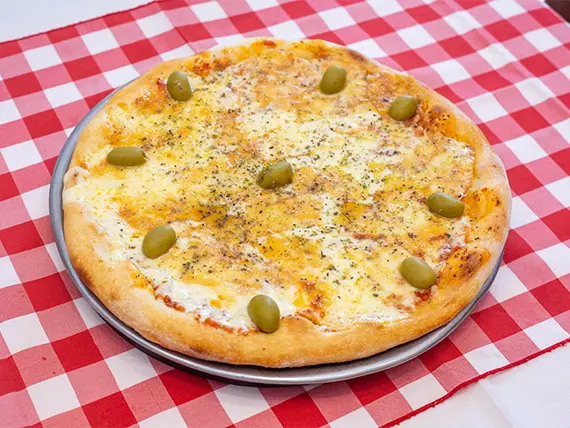

Muzzarella
La pizza de muzzarella es un clásico que nunca decepciona. Su base, perfectamente dorada y crujiente, se complementa con una salsa de tomate fresca y bien sazonada, que aporta un equilibrio ideal entre acidez y dulzura.